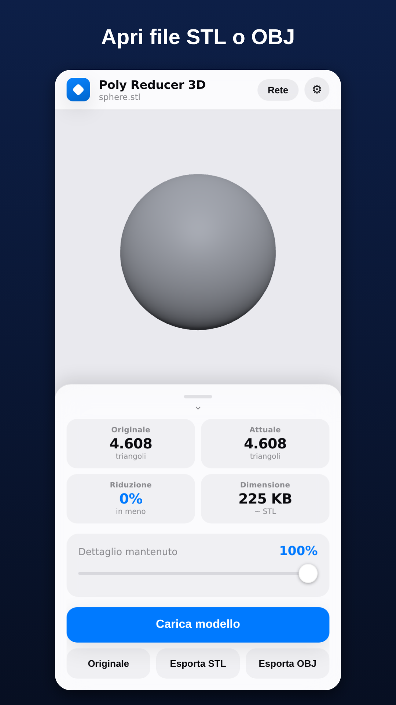
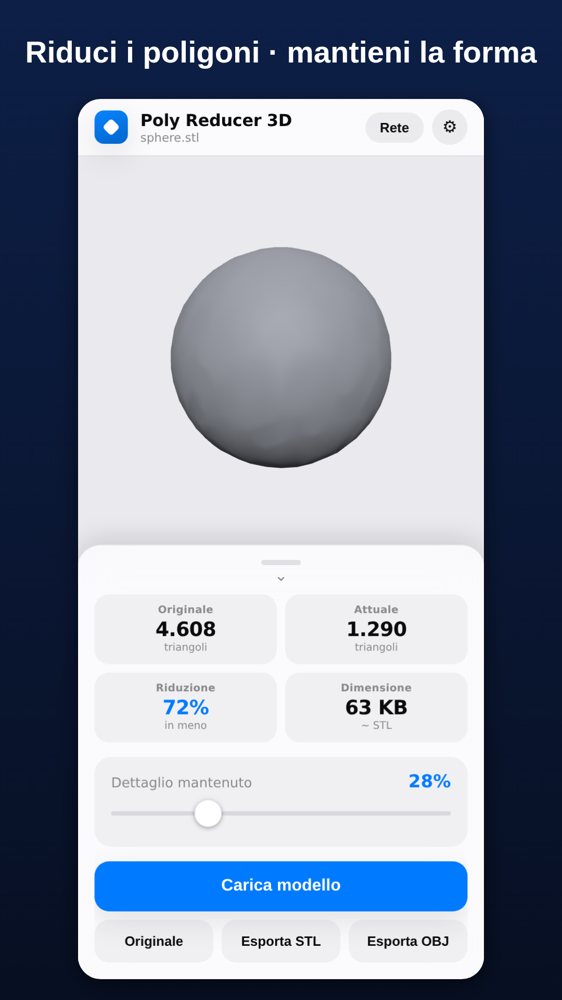
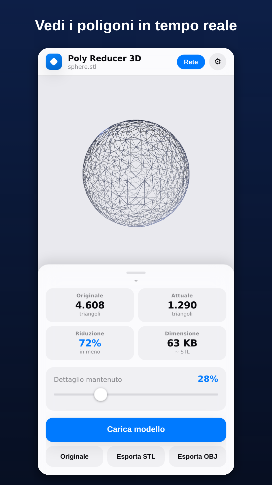
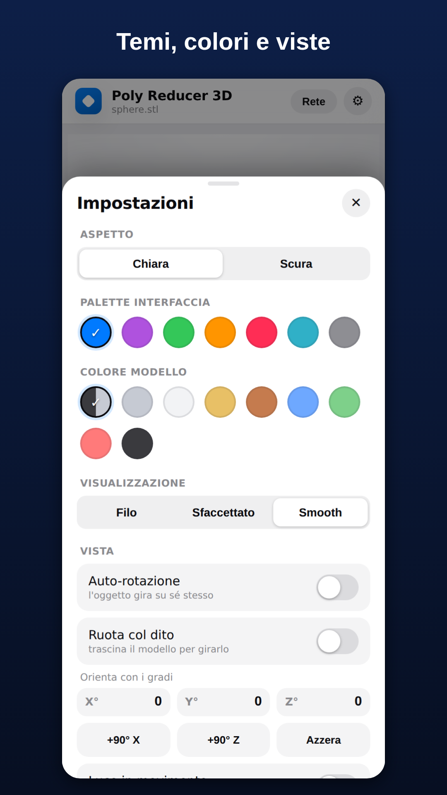

Tocca Carica modello e scegli un file .STL o .OBJ dal telefono. Vedrai il modello in 3D: ruotalo con un dito, zooma con due dita.

Sposta lo slider Dettaglio mantenuto: i triangoli diminuiscono in tempo reale mantenendo la forma. In alto vedi triangoli originali, attuali e la dimensione stimata.

In Impostazioni → Visualizzazione scegli Filo di ferro per vedere i poligoni, oppure Sfaccettato / Smooth. Usa i temi, i colori e le viste come preferisci.

Tocca Esporta STL o Esporta OBJ: il file alleggerito viene salvato sul telefono, pronto per la stampa 3D o per essere condiviso.
